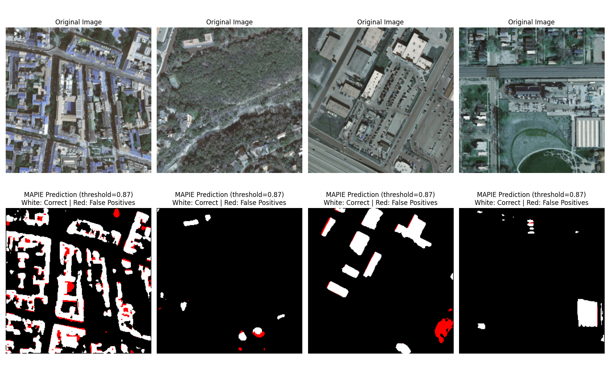
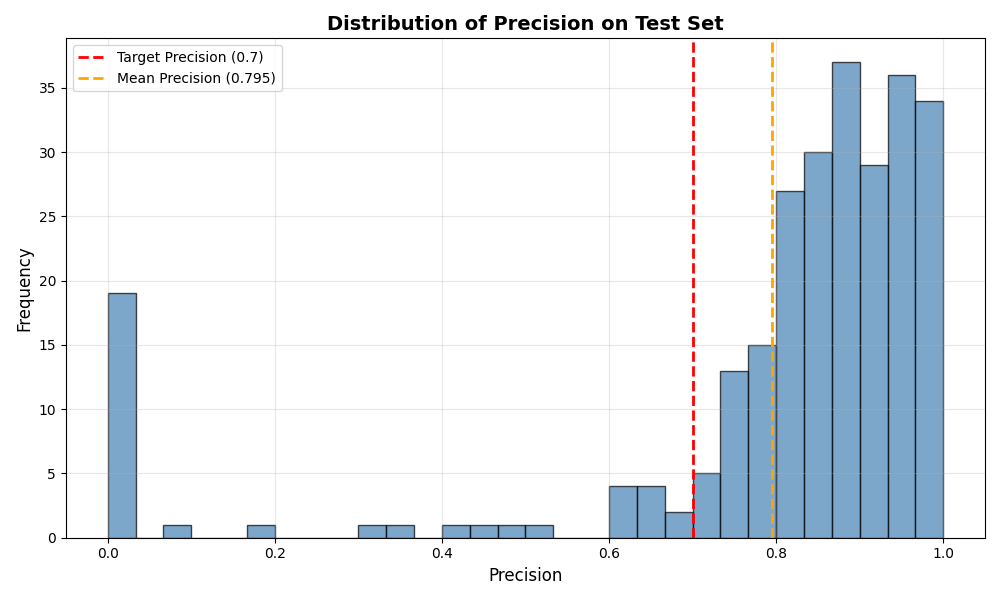
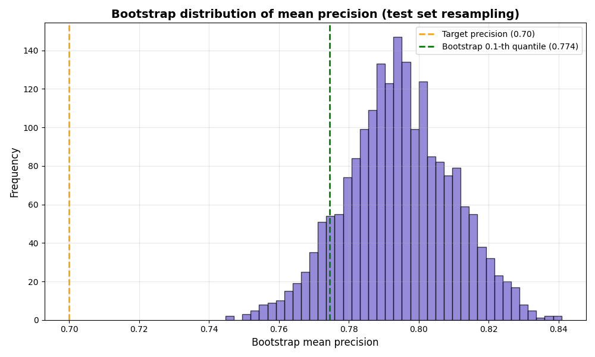

Note
Click here to download the full example code
Precision control for semantic segmentation¶
This example illustrates how to control the precision of a semantic segmentation model using MAPIE.
We use SemanticSegmentationController
to calibrate a decision threshold that statistically guarantees
a target precision level on unseen data.
The dataset, model and utility functions are loaded from Hugging Face for simplicity and reproducibility.
import importlib.util
import warnings
from pathlib import Path
import matplotlib.pyplot as plt
import numpy as np
import torch
from huggingface_hub import hf_hub_download, snapshot_download
from mapie.risk_control import SemanticSegmentationController
warnings.filterwarnings("ignore")
To keep this example self-contained, we load the dataset utilities and the segmentation LightningModule definition directly from a repository hosted on Hugging Face.
module_path = hf_hub_download(
repo_id="mapie-library/rooftop_segmentation",
filename="model_and_lightning_module.py",
repo_type="dataset",
)
spec = importlib.util.spec_from_file_location("hf_module", module_path)
hf_module = importlib.util.module_from_spec(spec)
spec.loader.exec_module(hf_module)
SegmentationLightningModule = hf_module.SegmentationLightningModule
RoofSegmentationDataset = hf_module.RoofSegmentationDataset
get_validation_transforms = hf_module.get_validation_transforms
Load a pretrained segmentation model checkpoint from Hugging Face.
model_ckpt = hf_hub_download(
repo_id="mapie-library/rooftop_segmentation",
filename="best_model-v1.ckpt",
repo_type="dataset",
)
data_root = Path(
snapshot_download(
repo_id="mapie-library/rooftop_segmentation",
repo_type="dataset",
allow_patterns=["calib/**", "test/**"],
)
)
DEVICE = "cuda" if torch.cuda.is_available() else "cpu"
model = SegmentationLightningModule.load_from_checkpoint(model_ckpt)
model.to(DEVICE)
model.eval()
print("Model loaded successfully!")
Out:
Warning: You are sending unauthenticated requests to the HF Hub. Please set a HF_TOKEN to enable higher rate limits and faster downloads.
Fetching ... files: 0it [00:00, ?it/s]
Fetching ... files: 10it [00:00, 82.55it/s]
Fetching ... files: 19it [00:00, 48.74it/s]
Fetching ... files: 25it [00:00, 39.72it/s]
Fetching ... files: 30it [00:00, 32.59it/s]
Fetching ... files: 35it [00:01, 27.83it/s]
Fetching ... files: 44it [00:01, 32.85it/s]
Fetching ... files: 52it [00:01, 33.20it/s]
Fetching ... files: 60it [00:01, 33.59it/s]
Fetching ... files: 64it [00:01, 28.68it/s]
Fetching ... files: 73it [00:02, 31.77it/s]
Fetching ... files: 81it [00:02, 32.22it/s]
Fetching ... files: 85it [00:02, 28.87it/s]
Fetching ... files: 91it [00:02, 27.36it/s]
Fetching ... files: 102it [00:03, 26.98it/s]
Fetching ... files: 113it [00:03, 37.45it/s]
Fetching ... files: 118it [00:03, 34.10it/s]
Fetching ... files: 123it [00:03, 31.08it/s]
Fetching ... files: 130it [00:03, 32.63it/s]
Fetching ... files: 134it [00:04, 26.83it/s]
Fetching ... files: 145it [00:04, 33.76it/s]
Fetching ... files: 151it [00:04, 29.96it/s]
Fetching ... files: 160it [00:04, 33.80it/s]
Fetching ... files: 168it [00:05, 34.07it/s]
Fetching ... files: 176it [00:05, 32.43it/s]
Fetching ... files: 184it [00:05, 34.04it/s]
Fetching ... files: 192it [00:05, 33.53it/s]
Fetching ... files: 200it [00:06, 33.67it/s]
Fetching ... files: 204it [00:06, 28.79it/s]
Fetching ... files: 215it [00:06, 33.92it/s]
Fetching ... files: 223it [00:06, 34.38it/s]
Fetching ... files: 231it [00:07, 34.34it/s]
Fetching ... files: 239it [00:07, 34.43it/s]
Fetching ... files: 247it [00:07, 34.50it/s]
Fetching ... files: 252it [00:07, 29.56it/s]
Fetching ... files: 262it [00:07, 34.01it/s]
Fetching ... files: 270it [00:08, 34.11it/s]
Fetching ... files: 278it [00:08, 32.13it/s]
Fetching ... files: 286it [00:08, 34.68it/s]
Fetching ... files: 294it [00:08, 34.55it/s]
Fetching ... files: 302it [00:09, 34.29it/s]
Fetching ... files: 310it [00:09, 34.13it/s]
Fetching ... files: 318it [00:09, 34.34it/s]
Fetching ... files: 326it [00:09, 34.41it/s]
Fetching ... files: 334it [00:10, 34.44it/s]
Fetching ... files: 342it [00:10, 34.48it/s]
Fetching ... files: 350it [00:10, 34.36it/s]
Fetching ... files: 359it [00:10, 35.36it/s]
Fetching ... files: 367it [00:10, 39.44it/s]
Fetching ... files: 372it [00:11, 40.06it/s]
Fetching ... files: 377it [00:11, 39.97it/s]
Fetching ... files: 382it [00:11, 40.32it/s]
Fetching ... files: 387it [00:11, 33.86it/s]
Fetching ... files: 392it [00:11, 35.54it/s]
Fetching ... files: 396it [00:11, 35.20it/s]
Fetching ... files: 403it [00:12, 28.65it/s]
Fetching ... files: 413it [00:12, 39.50it/s]
Fetching ... files: 420it [00:12, 45.00it/s]
Fetching ... files: 426it [00:12, 38.98it/s]
Fetching ... files: 431it [00:12, 35.23it/s]
Fetching ... files: 438it [00:12, 37.90it/s]
Fetching ... files: 443it [00:12, 38.31it/s]
Fetching ... files: 448it [00:13, 33.99it/s]
Fetching ... files: 454it [00:13, 35.69it/s]
Fetching ... files: 458it [00:13, 34.54it/s]
Fetching ... files: 462it [00:13, 35.19it/s]
Fetching ... files: 466it [00:13, 34.32it/s]
Fetching ... files: 470it [00:13, 35.08it/s]
Fetching ... files: 474it [00:13, 33.53it/s]
Fetching ... files: 479it [00:14, 34.56it/s]
Fetching ... files: 484it [00:14, 38.10it/s]
Fetching ... files: 488it [00:14, 32.49it/s]
Fetching ... files: 494it [00:14, 34.57it/s]
Fetching ... files: 498it [00:14, 34.04it/s]
Fetching ... files: 502it [00:14, 34.66it/s]
Fetching ... files: 506it [00:14, 34.21it/s]
Fetching ... files: 510it [00:14, 34.84it/s]
Fetching ... files: 514it [00:15, 35.49it/s]
Fetching ... files: 519it [00:15, 36.94it/s]
Fetching ... files: 523it [00:15, 35.74it/s]
Fetching ... files: 528it [00:15, 38.62it/s]
Fetching ... files: 532it [00:15, 36.32it/s]
Fetching ... files: 536it [00:15, 37.21it/s]
Fetching ... files: 540it [00:15, 35.07it/s]
Fetching ... files: 544it [00:15, 36.18it/s]
Fetching ... files: 548it [00:16, 34.41it/s]
Fetching ... files: 552it [00:16, 35.78it/s]
Fetching ... files: 556it [00:16, 32.45it/s]
Fetching ... files: 561it [00:16, 34.50it/s]
Fetching ... files: 565it [00:16, 34.60it/s]
Fetching ... files: 569it [00:16, 34.35it/s]
Fetching ... files: 573it [00:16, 34.23it/s]
Fetching ... files: 577it [00:16, 34.21it/s]
Fetching ... files: 581it [00:16, 35.04it/s]
Fetching ... files: 585it [00:17, 36.32it/s]
Fetching ... files: 589it [00:17, 34.12it/s]
Fetching ... files: 593it [00:17, 35.59it/s]
Fetching ... files: 597it [00:17, 33.56it/s]
Fetching ... files: 601it [00:17, 35.07it/s]
Fetching ... files: 605it [00:17, 22.41it/s]
Fetching ... files: 615it [00:17, 36.29it/s]
Fetching ... files: 620it [00:18, 35.15it/s]
Fetching ... files: 625it [00:18, 31.84it/s]
Fetching ... files: 631it [00:18, 36.32it/s]
Fetching ... files: 636it [00:18, 35.24it/s]
Fetching ... files: 640it [00:18, 35.81it/s]
Fetching ... files: 644it [00:19, 23.65it/s]
Fetching ... files: 650it [00:19, 25.04it/s]
Fetching ... files: 659it [00:19, 35.66it/s]
Fetching ... files: 664it [00:19, 34.18it/s]
Fetching ... files: 669it [00:19, 31.53it/s]
Fetching ... files: 675it [00:19, 36.64it/s]
Fetching ... files: 680it [00:20, 33.75it/s]
Fetching ... files: 684it [00:20, 34.69it/s]
Fetching ... files: 688it [00:20, 33.87it/s]
Fetching ... files: 692it [00:20, 34.87it/s]
Fetching ... files: 696it [00:20, 25.16it/s]
Fetching ... files: 702it [00:20, 24.03it/s]
Fetching ... files: 712it [00:21, 34.13it/s]
Fetching ... files: 716it [00:21, 34.67it/s]
Fetching ... files: 720it [00:21, 33.90it/s]
Fetching ... files: 724it [00:21, 34.63it/s]
Fetching ... files: 728it [00:21, 34.01it/s]
Fetching ... files: 732it [00:21, 34.51it/s]
Fetching ... files: 736it [00:21, 34.25it/s]
Fetching ... files: 740it [00:21, 34.38it/s]
Fetching ... files: 744it [00:21, 34.57it/s]
Fetching ... files: 748it [00:22, 23.39it/s]
Fetching ... files: 752it [00:22, 25.27it/s]
Fetching ... files: 760it [00:22, 36.51it/s]
Fetching ... files: 765it [00:22, 26.96it/s]
Fetching ... files: 769it [00:22, 27.83it/s]
Fetching ... files: 778it [00:23, 38.75it/s]
Fetching ... files: 783it [00:23, 25.83it/s]
Fetching ... files: 794it [00:23, 38.76it/s]
Fetching ... files: 800it [00:23, 35.55it/s]
Fetching ... files: 805it [00:24, 26.84it/s]
Fetching ... files: 811it [00:24, 29.87it/s]
Fetching ... files: 819it [00:24, 38.07it/s]
Fetching ... files: 825it [00:24, 33.49it/s]
Fetching ... files: 830it [00:24, 35.20it/s]
Fetching ... files: 835it [00:25, 27.00it/s]
Fetching ... files: 843it [00:25, 33.72it/s]
Fetching ... files: 849it [00:25, 36.39it/s]
Fetching ... files: 854it [00:25, 36.29it/s]
Fetching ... files: 859it [00:25, 32.67it/s]
Fetching ... files: 865it [00:25, 36.29it/s]
Fetching ... files: 869it [00:25, 31.20it/s]
Fetching ... files: 874it [00:26, 33.91it/s]
Fetching ... files: 878it [00:26, 33.87it/s]
Fetching ... files: 885it [00:26, 40.99it/s]
Fetching ... files: 890it [00:26, 37.66it/s]
Fetching ... files: 894it [00:26, 37.79it/s]
Fetching ... files: 898it [00:26, 35.90it/s]
Fetching ... files: 902it [00:26, 36.63it/s]
Fetching ... files: 909it [00:26, 41.05it/s]
Fetching ... files: 914it [00:27, 36.79it/s]
Fetching ... files: 920it [00:27, 39.37it/s]
Fetching ... files: 925it [00:27, 36.22it/s]
Fetching ... files: 930it [00:27, 35.05it/s]
Fetching ... files: 936it [00:27, 40.19it/s]
Fetching ... files: 941it [00:27, 37.26it/s]
Fetching ... files: 945it [00:27, 33.24it/s]
Fetching ... files: 952it [00:28, 38.26it/s]
Fetching ... files: 961it [00:28, 45.90it/s]
Fetching ... files: 967it [00:28, 48.85it/s]
Fetching ... files: 973it [00:28, 43.34it/s]
Fetching ... files: 980it [00:28, 46.07it/s]
Fetching ... files: 985it [00:28, 42.69it/s]
Fetching ... files: 990it [00:28, 37.18it/s]
Fetching ... files: 996it [00:29, 39.00it/s]
Fetching ... files: 1001it [00:29, 37.69it/s]
Fetching ... files: 1005it [00:29, 29.21it/s]
Fetching ... files: 1009it [00:29, 31.29it/s]
Fetching ... files: 1013it [00:29, 31.62it/s]
Fetching ... files: 1018it [00:29, 27.33it/s]
Fetching ... files: 1025it [00:30, 27.41it/s]
Fetching ... files: 1031it [00:30, 21.10it/s]
Fetching ... files: 1040it [00:30, 26.99it/s]
Fetching ... files: 1051it [00:30, 38.07it/s]
Fetching ... files: 1056it [00:31, 28.38it/s]
Fetching ... files: 1065it [00:31, 36.32it/s]
Fetching ... files: 1070it [00:31, 34.42it/s]
Fetching ... files: 1075it [00:31, 32.88it/s]
Fetching ... files: 1079it [00:32, 26.55it/s]
Fetching ... files: 1086it [00:32, 25.08it/s]
Fetching ... files: 1094it [00:32, 31.82it/s]
Fetching ... files: 1098it [00:32, 27.44it/s]
Fetching ... files: 1107it [00:32, 36.81it/s]
Fetching ... files: 1112it [00:33, 28.07it/s]
Fetching ... files: 1120it [00:33, 33.51it/s]
Fetching ... files: 1125it [00:33, 33.49it/s]
Fetching ... files: 1130it [00:33, 32.79it/s]
Fetching ... files: 1134it [00:33, 25.59it/s]
Fetching ... files: 1142it [00:34, 25.73it/s]
Fetching ... files: 1146it [00:34, 26.97it/s]
Fetching ... files: 1154it [00:34, 33.61it/s]
Model loaded successfully!
Next, two datasets are loaded from Hugging Face: a calibration set used to estimate risks and select an appropriate decision threshold, and a test set reserved for evaluating controlled predictions on unseen data.
CALIB_IMAGES_DIR = data_root / "calib" / "images"
CALIB_MASKS_DIR = data_root / "calib" / "masks"
TEST_IMAGES_DIR = data_root / "test" / "images"
TEST_MASKS_DIR = data_root / "test" / "masks"
calib_dataset = RoofSegmentationDataset(
images_dir=CALIB_IMAGES_DIR,
masks_dir=CALIB_MASKS_DIR,
transform=get_validation_transforms(
image_size=(256, 256)
), # reshape images to reduce memory usage
)
calib_loader = torch.utils.data.DataLoader(calib_dataset, batch_size=16)
test_dataset = RoofSegmentationDataset(
images_dir=TEST_IMAGES_DIR,
masks_dir=TEST_MASKS_DIR,
transform=get_validation_transforms(
image_size=(256, 256)
), # reshape images to reduce memory usage
)
test_loader = torch.utils.data.DataLoader(test_dataset, batch_size=16)
print(f"Calibration set size: {len(calib_dataset)}")
print(f"Test set size: {len(test_dataset)}")
Out:
Dataset initialized with 289 image-mask pairs
Dataset initialized with 288 image-mask pairs
Calibration set size: 289
Test set size: 288
A SemanticSegmentationController is instantiated
to control the precision risk (1 - precision) and automatically select a threshold
that meets the target precision level with high confidence.
TARGET_PRECISION = 0.7
CONFIDENCE_LEVEL = 0.9
precision_controller = SemanticSegmentationController(
predict_function=model,
risk="precision",
target_level=TARGET_PRECISION,
confidence_level=CONFIDENCE_LEVEL,
)
print(f"Target precision level: {TARGET_PRECISION}")
Out:
During calibration, the controller evaluates the precision risk over a range of thresholds on the calibration dataset in order to identify an optimal decision threshold.
for i, sample in enumerate(calib_loader):
image, mask = sample["image"], sample["mask"]
image = image.to(DEVICE)
mask = mask.cpu().numpy()
# Filter images that contain masks
has_mask = mask.sum(axis=(1, 2)) > 0
image = image[has_mask]
mask = mask[has_mask]
if len(image) > 0:
with torch.no_grad():
precision_controller.compute_risks(image, mask)
# Compute the best threshold
precision_controller.compute_best_predict_param()
print("Controller calibrated successfully!")
print(f"Optimal threshold found: {precision_controller.best_predict_param[0]:.4f}")
Out:
Controlled predictions are visually inspected on a few test images to illustrate the effect of MAPIE thresholding compared to raw model outputs.
def denormalize_image(tensor_image: torch.Tensor) -> np.ndarray:
"""Denormalize image tensor for visualization."""
mean = np.array([0.485, 0.456, 0.406])
std = np.array([0.229, 0.224, 0.225])
image = tensor_image.cpu().numpy().transpose(1, 2, 0)
image = std * image + mean
image = np.clip(image, 0, 1)
return image
# Select random test images
NUM_EXAMPLES = 4
np.random.seed(0)
# Get indices of images with masks
indices_with_masks = []
for idx in range(len(test_dataset)):
sample = test_dataset[idx]
if sample["mask"].sum() > 0:
indices_with_masks.append(idx)
random_indices = np.random.choice(indices_with_masks, NUM_EXAMPLES, replace=False)
fig, axes = plt.subplots(2, NUM_EXAMPLES, figsize=(4 * NUM_EXAMPLES, 10))
for col, idx in enumerate(random_indices):
sample = test_dataset[idx]
image = sample["image"].unsqueeze(0).to(DEVICE)
mask = sample["mask"].cpu().numpy()
with torch.no_grad():
# Get MAPIE prediction
mapie_pred = precision_controller.predict(image)[0]
# Denormalize image
img_display = denormalize_image(sample["image"])
# Plot original image (top row)
axes[0, col].imshow(img_display)
axes[0, col].set_title("Original Image")
axes[0, col].axis("off")
# Plot MAPIE prediction with correct pixels in white and false positives in red (bottom row)
pred_visualization = np.zeros((*mapie_pred[0].shape, 3))
true_positives = mask * mapie_pred[0]
pred_visualization[true_positives > 0] = [1, 1, 1]
false_positives = (1 - mask) * mapie_pred[0]
pred_visualization[false_positives > 0] = [1, 0, 0]
axes[1, col].imshow(pred_visualization)
axes[1, col].set_title(
f"MAPIE Prediction (threshold={precision_controller.best_predict_param[0]:.2f})\n"
"White: Correct | Red: False Positives"
)
axes[1, col].axis("off")
plt.tight_layout()
plt.show()

The controller is finally evaluated on the test set by computing the achieved precision on each image to verify that the target precision level is satisfied on unseen data.
precisions_list = []
for i, sample in enumerate(test_loader):
image, mask = sample["image"], sample["mask"]
image = image.to(DEVICE)
mask = mask.cpu().numpy()
# Filter images with masks
has_mask = mask.sum(axis=(1, 2)) > 0
image = image[has_mask]
mask = mask[has_mask]
if len(image) > 0:
with torch.no_grad():
pred = precision_controller.predict(image)
# Compute precision for each image
for j in range(len(image)):
tp = (mask[j] * pred[j]).sum()
fp = ((1 - mask[j]) * pred[j]).sum()
precision = tp / (tp + fp + 1e-8)
precisions_list.append(precision)
precisions_array = np.array(precisions_list)
Finally, the distribution of precision values over the test set is plotted to summarize the controlled performance.
fig, ax = plt.subplots(figsize=(10, 6))
ax.hist(precisions_array, bins=30, alpha=0.7, color="steelblue", edgecolor="black")
ax.axvline(
TARGET_PRECISION,
color="red",
linestyle="--",
linewidth=2,
label=f"Target Precision ({TARGET_PRECISION})",
)
ax.axvline(
precisions_array.mean(),
color="orange",
linestyle="--",
linewidth=2,
label=f"Mean Precision ({precisions_array.mean():.3f})",
)
ax.set_xlabel("Precision", fontsize=12)
ax.set_ylabel("Frequency", fontsize=12)
ax.set_title("Distribution of Precision on Test Set", fontsize=14, fontweight="bold")
ax.legend(fontsize=10)
ax.grid(True, alpha=0.3)
plt.tight_layout()
plt.show()

The histogram shows that most test images achieve or exceed the target precision level, illustrating the effectiveness of MAPIE’s risk control for semantic segmentation tasks.
Bootstrap the mean precision over different samplings of the test set (resampling images with replacement).
N_BOOTSTRAP = 2000
BOOTSTRAP_SEED = 123
rng = np.random.default_rng(BOOTSTRAP_SEED)
bootstrap_means = np.empty(N_BOOTSTRAP, dtype=float)
n = precisions_array.size
for b in range(N_BOOTSTRAP):
bootstrap_sample = rng.choice(precisions_array, size=n, replace=True)
bootstrap_means[b] = bootstrap_sample.mean()
delta = round(1 - CONFIDENCE_LEVEL, 2)
quantile_confidence = np.quantile(bootstrap_means, delta)
print(f"Bootstrap {delta}-th quantile: {quantile_confidence:.4f}")
fig, ax = plt.subplots(figsize=(10, 6))
ax.hist(
bootstrap_means,
bins=40,
alpha=0.7,
color="slateblue",
edgecolor="black",
)
ax.axvline(
TARGET_PRECISION,
color="orange",
linestyle="--",
linewidth=2,
label=f"Target precision ({TARGET_PRECISION:.2f})",
)
ax.axvline(
quantile_confidence,
color="green",
linestyle="--",
linewidth=2,
label=f"Bootstrap {delta}-th quantile ({quantile_confidence:.3f})",
)
ax.set_xlabel("Bootstrap mean precision", fontsize=12)
ax.set_ylabel("Frequency", fontsize=12)
ax.set_title(
"Bootstrap distribution of mean precision (test set resampling)",
fontsize=14,
fontweight="bold",
)
ax.legend(fontsize=10)
ax.grid(True, alpha=0.3)
plt.tight_layout()
plt.show()

Out:
Total running time of the script: ( 1 minutes 23.129 seconds)
Download Python source code: plot_semantic_segmentation_precision_control.py
Download Jupyter notebook: plot_semantic_segmentation_precision_control.ipynb